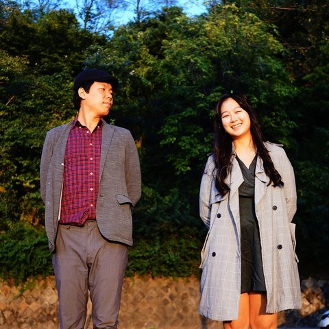
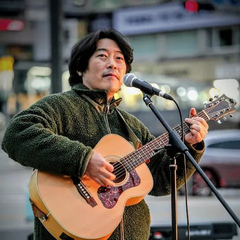
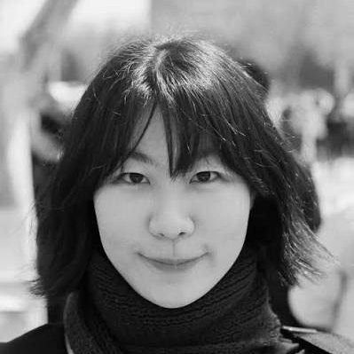
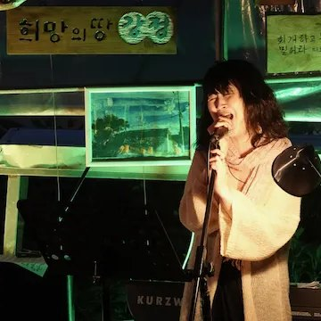
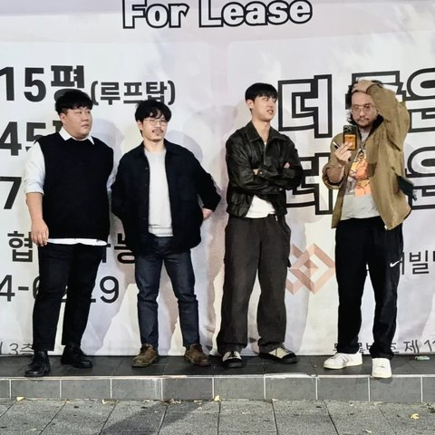
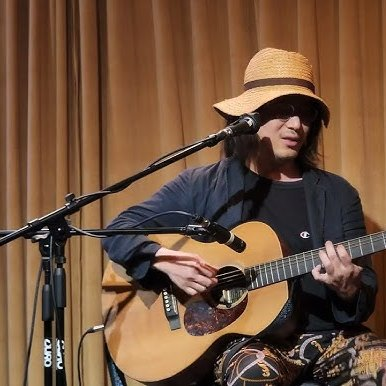
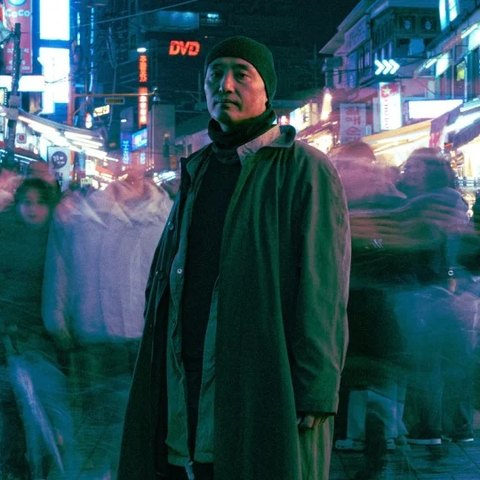

왜 잔치인가
사람답게 산 것 같다.
몇 년 만에 웃어봤는지
모르겠다. — 주민 허순이 씨, 2025년 「잣나무골 여름잔치」에서
오늘 하루는, 웃자고 여는 자리입니다.
후원 계좌
농협 356-1559-4666-63
예금주 이창후
문의
대책위 이창후 총무 010-8918-8933
공연 박성율 목사 010-8748-3044
주최 · 홍천양수발전소 반대대책위원회
출연진 프로필 사진 출처 — 벅스 아티스트 페이지, 강정피스앤뮤직캠프, 경기아트콜렉티브, 주최 측 제공
2026. 9. 5. 토
오후 1시
풍천리 마을회관
강원 홍천 화촌면
무료 · 예매 없음 오늘 순서는 안쪽에
한 팀이 15분씩 노래하고 5분씩 무대를 바꿉니다. 현장 사정에 따라 조금씩 밀릴 수 있습니다.
13:00 – 14:00
식사 · 댄스 · 수다

14:00 – 14:15
경하와 세민
재개발로 쫓겨나는 자리, 세상에게 죽임당한 이를 기리는 자리에서 노래해온 듀오.
14:20 – 14:35
박지휘
프리포크 싱어송라이터. 로파이한 프리포크로 시작해, 근래에는 엘리엇 스미스의 새드코어에 기운 곡을 씁니다.

14:40 – 14:55
길가는밴드 장현호
싱어송라이터 장현호를 중심으로 2011년 결성된 거리 밴드. 세월호, 강정마을, KTX 해고 승무원 — 십수 년을 현장에서 불러왔습니다.

15:00 – 15:15
최양다음 NEXT
싱어송라이터. 이름을 여러 나라 말로 씁니다 — 다음, NEXT, 次, Nächste, 翌.

15:20 – 15:35
자이
인디 1세대 밴드 헤디마마의 보컬·베이스를 거쳐, 지금은 낮은 중저음과 정직한 선율의 네오소울 포크를 씁니다.

15:40 – 15:55
김동산과 블루이웃
수원의 포크·블루스 음악가 김동산과 밴드 블루이웃. 해고 노동자와 쫓겨나는 상인들의 이야기를 노래해 '한국의 우디거스리'로 불립니다.

16:00 – 16:15
마쓰모토 코타
일본과 베를린을 오가며 이주와 여행을 거듭해온 음악가. 거친 결의 목소리에 일본어 노랫말을 얹고 기타·피아노·아카펠라를 오갑니다.
16:20 – 16:35
ZSTHYGER
전자음악·메탈·클래식을 아우르는 연주자이자 프로듀서. '악기와 악사의 가치를 증명하는 방법은 연주뿐'이라는 태도로 작업합니다.

16:40 – 16:55
삼각전파사
전자음악가이자 SF 작가 장호진의 솔로 프로젝트. 예측 불가능한 사운드와 비선형적 작곡으로 한국 사회의 구조적 모순을 담습니다.
17:00
다 함께 단체사진